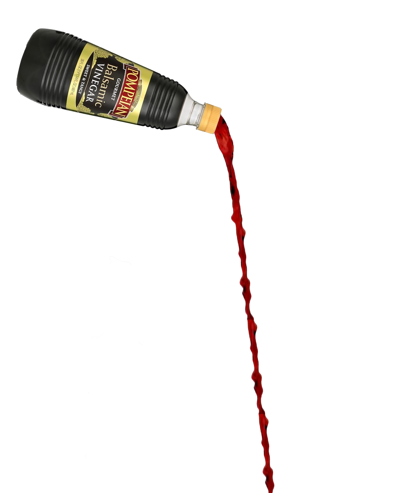

Alexa's Passion Project
All the things I love...

Balsamic Vinager

Georgia Tech Basketball
My Favorite Georgia Tech Players:
- JOSE ALVARADO
- James Banks
- Moses Wright
- Jordan Usher
- Michael Devoe
- Bubba Parham
- Miles Kelly
- Lance Terry
- Deivon Smith
The Decemberist
My Favorite Decemberist Song:
[Verse 1: Colin Meloy]
Mother, I can hear your footfall now
Soft disturbance in the dead fall, how
It precedes you like a black smoke pall
Still the wanting comes in waves
[Verse 2: Colin Meloy]
And you delivered me from danger then
Tore my cradle from the reedy glen
Swore to save me from the world of men
Still the wanting comes in waves, in waves, and waves
[Chorus 1: Colin Meloy]
And the wanting comes in waves
And the wanting comes in waves
And I want this night
And I want this night
[Verse 3: Shara Worden]
How I made you
I wrought you, I pulled you
From war I labored you
From cancer I cradled you
[Chorus 2: Shara Worden]
And now, this is how I am repaid?
This is how I am repaid?
[Verse 4: Shara Worden]
Remember when I found you?
The miseries that hounded you?
And I gave you motion
Anointed with lotions
[Chorus 2]
And now, this is how I am repaid?
This is how I am repaid?
[Verse 5: Colin Meloy]
Mother hear this proposition right
Grant me freedom to enjoy this night
And I'll return to you at break of light
For the wanting comes in waves, and waves, and waves
[Chorus 3: Colin Meloy]
Still the wanting comes in waves
Still the wanting comes in waves
Still the wanting comes in waves
And you owe me life, and you owe me life, oh
[Verse 6: Shara Worden]
And if I grant you
This favor to hand you
Your life for the evening
I will retake by morning
[Chorus 4]
And so consider it your debt repaid
Consider it your debt repaid, repaid, repaid
I am a very passionate person it is difficult for me to pick just one thing. I love lots of things. I love the color pink. I love rasberrys. I love stuffed animals. I love legos. I love fashion. I love basketball. I love areial dance. I love spelling things how ever it makes sense to me I love not using puctuation I love gymnastics. I love live music. I love loud music. I love my dads music. I love being at sports games. I love watching my favorite players succseed. I love cheese cake. I love anything chocolate. I love flowers. I love art. I love balsamic vineager with bread. I love cocacola. I love atlanta. I love the beach. I love hammoks. I love fundip. I love fairys. I love fairy gardens. I love unicorns. I love puppys and dogs. I love doing my hair. I love earmuffs. I love reallyyy buttery popcorn (heartattck level). I love decor. I love soft prezels. I love warm days. I love owls. I love stinky cheese. I love eating outside. I love thai food. I love romcoms. I love mamamia. I love things that make me happy. I love working out. I love stain glass. I love cookie dough. I love brownie dough. I love giraffes. I love puzzles. I love good tv shows. I love my family. I love my friends and my boyfriend. I love all the dogs ive ever had. I love all the pets ive every had. I love everything else that im forgeting.